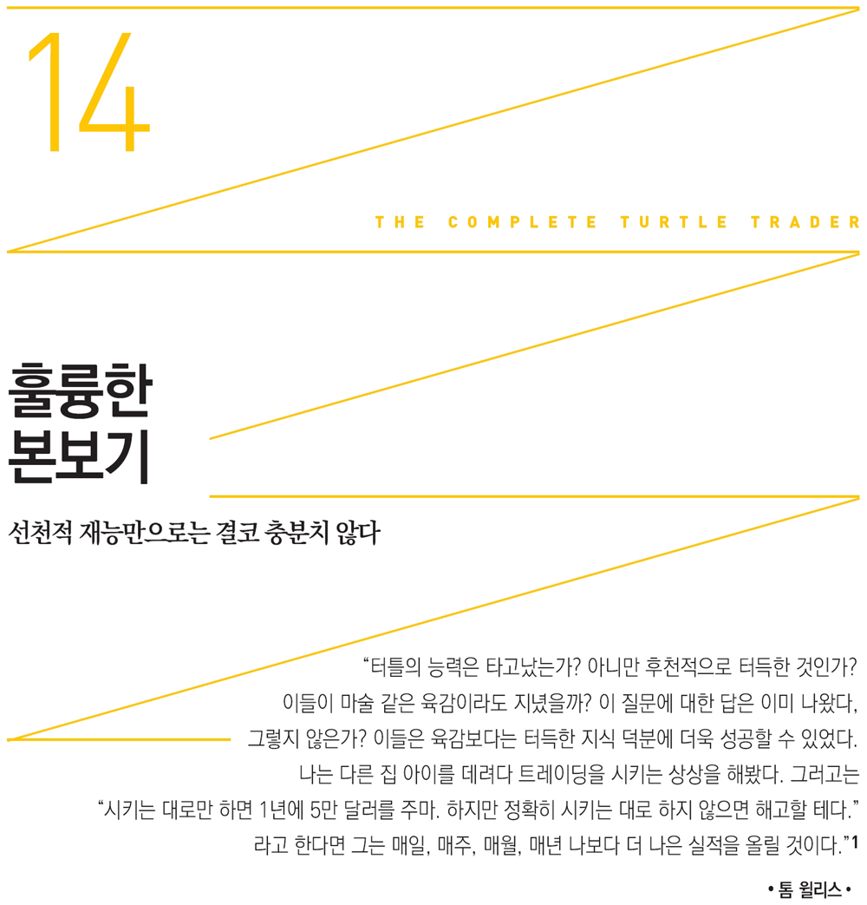

터틀 스토리는 두 부분으로 나뉜다. 앞부분에서는 리처드 데니스가 마련한 비교적 평평한 운동장에서 진행된 터틀 실험을 다뤘다. 이 실험으로 트레이딩은 타고난 것이 아니라 누구든 배우면 잘할 수 있음이 증명되었다. 터틀 실험 이후 얘기를 담은 뒷부분에서는 각 터틀이 현실을 마주하며 겪는 과정과 규칙 이외의 인간 본능이 개입되는 모습을 그렸다.
터틀 실험이 가장 중요한 부분이기는 하지만, 터틀 스토리에 대해 잘 아는 몇몇 사람들은 각 터틀이 실험을 뒤로하고 홀로서기를 하는 과정을 그린 뒷부분을 더욱 중요하게 여긴다. 어느 금요일 늦은 오후, 파크 애비뉴 사무실 근처에서 점심을 함께 했던 래리 하이트가 내게 전화했다. 민트 캐피탈Mint Capital을 설립하고 수십억 달러를 운용하는 맨 파이낸셜Man Financial 헤지펀드의 초창기 성공에 결정적 기여를 한 그는 (지금 독자가 읽고 있는) 터틀 스토리를 쓰고 있던 내게 조언을 해줬다.
그가 “이 새 책에 대해 곰곰이 생각해봤습니다…….”라며 말을 꺼냈다. “좋은 실적을 거두고 오래 지속하는 사람들은 강인합니다. 어떤 난관을 만나도 자신의 게임에 집중하죠. 초점을 잃지 않을 만큼 정신력이 강하다는 뜻입니다. 강인함이란 두들겨 맞아도 아랑곳하지 않고 돌진하는 능력을 말합니다. 이런 사람들은 손해가 나도 실망하지 않습니다. 손실이 발생한 뒤 다시 일어서지 못하는 사람들이 있습니다. 트레이딩에 실패한 터틀들을 생각해보세요. 실패한 사람들의 공통점이 무엇일까요? 실패한 사람들은 쉽게 포기합니다. 강인하지 못하죠.”
리처드 데니스는 터틀을 훈련시킨 동안에는 이들에게 강인한 정신력을 요구했다. 하지만 터틀들은 수련이 끝난 뒤에 리처드 데니스가 제공한 보호막이 없는 세상과 맞닥뜨려야 했다. 래리 하이트는 이를 직접 목격했다. 그는 터틀들에게 레버리지를 50퍼센트 줄이라는 내용의 리처드 데니스의 메모를 꺼냈다(7장 참조). 그는 리처드 데니스가 실수를 저지르고 자기의 자존심을 건드리는 행위를 묵살했지만 끝내 실수를 인정하고 고쳤다는 점을 강조했다. 래리 하이트는 이런 결단력이 ‘강한 정신력’이 있었기에 가능했다고 보았다.
하지만 리처드 데니스는 강인함이나 승리에 대한 의지를 기준으로 수련생들을 뽑지 않았다. 정신력을 강화하는 훈련을 시키지도 않았다. 그가 간접비용을 대주고 매매하도록 한 평평한 운동장에서는 모두가 정신력이 강한 듯 보였다. 하지만 제리 파커와 폴 라바, 그 외 몇몇 터틀과 살렘 에이브러햄만이 리처드 데니스가 지녔던 기업가적 기질과 추진력을 보였다.
해마다 있는 프로 스포츠 팀의 신인선수 선발 과정을 생각해보라. 각 구단은 정신력이 강한 후보를 걸러내는 능력이 없다. 실제로 매년 대학 스타선수들이 많은 환영을 받으며 프로가 되지만 ‘결코 실망시키지 않으리라’ 예상되었던 선수 중 한 명 이상은 기대에 미치지 못한다. 대학에서는 이름을 날렸지만 NFL나 NBA나 메이저리그에는 선발되지 못한 선수들이 수천 명이나 된다는 사실을 생각해보라. 겉으로만 잘하는 듯 보이는 사람과 정말 경쟁력이 있는 사람 사이의 차별점은 분명 존재한다. 선천적 재능만으로는 결코 충분치 않다.
돈을 버는 일도 마찬가지다. 예컨대 2005년 헤지펀드 업계에서 돈을 가장 많이 번 열 명의 트레이더는 다음과 같다.
1. 제임스 시몬스(르네상스 테크놀로지스 코퍼레이션): 15억 달러
2. 티분 피켄스 주니어(BP 캐피탈 매니지먼트): 14억 달러
3. 조지 소로스(소로스 펀드 매니지먼트): 8억 4,000만 달러
4. 스티븐 코헨Steven Cohen(SAC 캐피탈 어드바이저스): 5억 5,000만 달러
5. 폴 튜더 존스 2세(튜더 인베스트먼트 코퍼레이션): 5억 달러
6. 에드워드 램퍼트Edward Lampert(ESL 인베스트먼츠): 4억 2,500만 달러
7. 브루스 코브너Bruce Kovner(캑스턴 어소시에이츠): 4억 달러
8. 데이비드 테퍼David Tepper(애팔루사 매니지먼트): 4억 달러
9. 데이비드 쇼David Shaw(DE 쇼 앤 컴퍼니): 3억 4,000만 달러
10. 스티븐 맨델 쥬니어Stephen Mandel, Jr.(론 파인 캐피탈): 2억 7,500만 달러
위 트레이더들은 규칙만으로 톱10이 된 것이 아니다. 모두가 월가의 톱10(이들 중 상당수가 추세추종 트레이더다)이 될 수는 없지만 터틀 스토리는 최고 트레이더의 전략을 배우고 따라하는 것이 가능하다는 확실한 증거다.
더욱 위대한 도전과 진정한 성공의 ‘비결’은 이 책 후반부에 나오는 투철한 기업가 정신을 지닌 트레이더들의 발자취에서 확인할 수 있다. 이 승리자들은 자신감, 강인함, 기업가적 열정을 모범적으로 보여줌으로써, 대부분의 사람을 주저하게 만드는 본능적 회피 성향은 극복될 수 있다는 사실을 증명했다.
하지만 승리자들이 보여준 자신감, 강인함, 기업가적 열정은 마음먹고 노력해야만 쌓을 수 있는 것들이다. 실제 이처럼 살아온 버크셔 해서웨이 그룹의 2인자 찰리 멍거는 이렇게 말했다. “다양한 분야에서 지혜로움을 보인 사람치고 늘 책을 읽지 않은 사람은 제 평생 단 한 명도 본 적이 없습니다.”
위 톱10중 6위인 에디 램퍼트 사례를 살펴보자. 워렌 버핏의 투자 근거를 하나하나 분석한 그는 이렇게 말했다. “당시 그의 입장에 서서 ‘왜 그렇게 투자했을까?’를 따져봅니다. 저는 이런 식으로 익혀왔습니다.”
의사와 트레이더가 서로 비슷한 점을 살펴보자. 훌륭한 의사는 성실하고 부지런하며 몇 년이고 밤낮으로 끊임없이 훈련한다.
중요한 점은 시장은 투자자를 전혀 신경 써 주지 않는다는 사실이다. 성, 문화, 종교, 인종 따위에는 관심이 없다. 하지만 시장은 누구든 참여해 큰돈을 벌려는 시도를 할 수 있는 마지막 영역이다. 한마디로 제리 파커, 살렘 에이브러햄, 리처드 데니스 같은 트레이더들은 누구나 참가할 수 있는 합법적 게임을 하고 있다.
1983년 리처드 데니스가 낸 모집광고를 발견하는 행운이 없어도 트레이더로 성공할 수 있다. 살렘 에이브러햄은 리처드 데니스와 그의 철학이 존재한다는 사실만 알고 이후로는 스스로 개척해 나갔다. 이 점이 바로 전체 스토리에서 살렘 에이브러햄이 중요한 이유다. 그는 리처드 데니스가 시카고 트레이딩 피트에 처음 들어간 이후 40년 넘게 다져온 확고한 의지와 기업가적 기질을 실천에 옮겼다.
하지만 지속되는 터틀 전설의 최고 방점은, 2006년 가을 시카고 오헤어 공항에서 잠깐 만난 리처드 샌더Richard Sandor가 찍었다. 선물시장의 창시자로 불리는 이 전설적 인물은 끊임없이 훈련하고 승리를 위해 포기하지 않는 의지가 중요하다고 계속 강조했다. 공항에서 헤어질 때 그가 활짝 웃으며 존경과 감탄을 숨기지 않고 말했다. “당신도 리처드 데니스가 트레이딩을 다시 시작한다는 것, 알죠?”
이 한마디에 모든 의미가 담겨있다. 이 말로 우리 모두 타고난 재능을 발전시킬 기회가 있다는 내 믿음이 더욱 확고해졌다. 시카고의 평범한 젊은이를 최고 트레이더로 이끈 길, 초보 터틀을 훈련시켜 자기처럼 큰돈을 벌 수 있도록 한 길, 가까이서든 멀리서든 한 세대에 걸쳐 월가 거장들에게 다방면에서 영감을 불어넣어 준 길은 우리도 밟을 수 있는 행로다.